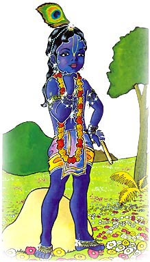

A lo lejos Gopal vió todo lo que sucedia, el intento
correr y correr para advertir a los Gopas pero no
pudo, pues ellos entraron demasido rápido.
Por un momento Gopal se sintió triste. Sus amigos se encontraban en el estómago de esta serpiete. Como los ayudaré? Se preguntaba.
Entonces Krishna entró por la boca de la serpiente, y después de haber dado algunos pasos dentro, Agha cerró su mandibula inmediatamente.
Los seres celestiales quienes estaban ocultos tras las nubes, exclamaron: "Que terrible" O Dios, no!"
Por un momento Gopal se sintió triste. Sus amigos se encontraban en el estómago de esta serpiete. Como los ayudaré? Se preguntaba.
Entonces Krishna entró por la boca de la serpiente, y después de haber dado algunos pasos dentro, Agha cerró su mandibula inmediatamente.
Los seres celestiales quienes estaban ocultos tras las nubes, exclamaron: "Que terrible" O Dios, no!"